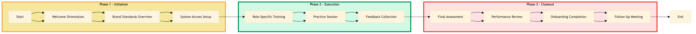

| Role | Steps |
|---|---|
| HR Manager | 1.1 3.3 |
| Training Manager | 1.2 2.3 3.1 |
| IT Support Specialist | 1.3 |
| Supervisor | 2.1 3.2 3.4 |
| Step | Name | Role | System | Input | Output | KPI | Dec? | Exc? | Pain Point / Risk |
|---|---|---|---|---|---|---|---|---|---|
| 1.1 | Welcome Orientation | HR Manager | Workday HCM | New hire data | Training schedule confirmation | Less than 5 minutes per new hire | N | N | Ensuring all required documents are available for onboarding |
| 1.2 | Brand Standards Overview | Training Manager | Oracle OPERA Cloud | Brand standards presentation | Completed training checklist | Less than 30 minutes per new hire | N | Y | Handling interruptions during the training session |
| 1.3 | System Access Setup | IT Support Specialist | Oracle OPERA Cloud, Workday HCM | New hire credentials | Access granted to Marriott systems | Less than 10 minutes per new hire | N | Y | Ensuring secure access without delays |
| 2.1 | Role-Specific Training | Supervisor | Oracle OPERA Cloud, IDeaS G3 RMS | Role-specific training materials | Training completion certificate | Less than 1 hour per new hire | N | Y | Customizing training for different roles |
| 2.2 | Practice Session | New Hire | Oracle OPERA Cloud, IDeaS G3 RMS | Training materials and system access | Practice session report | Less than 2 hours per new hire | N | Y | Providing sufficient hands-on practice |
| 2.3 | Feedback Collection | Training Manager | Oracle OPERA Cloud, Workday HCM | Practice session report | Training feedback form | Less than 15 minutes per new hire | N | Y | Gathering detailed and actionable feedback |
| 3.1 | Final Assessment | Training Manager | Oracle OPERA Cloud, Workday HCM | Training materials and system access | Assessment results | Less than 30 minutes per new hire | Y | Y | Ensuring the assessment accurately reflects training objectives |
| 3.2 | Performance Review | Supervisor | Oracle OPERA Cloud, Workday HCM | Assessment results and new hire performance | Performance review document | Less than 1 hour per new hire | N | Y | Providing constructive feedback based on assessment |
| 3.3 | Onboarding Completion | HR Manager | Workday HCM, Oracle OPERA Cloud | Performance review document | Onboarding completion certificate | Less than 10 minutes per new hire | N | Y | Updating HR records promptly |
| 3.4 | Follow-Up Meeting | Supervisor | Oracle OPERA Cloud, Workday HCM | Onboarding completion certificate | Follow-up meeting notes | Less than 30 minutes per new hire | N | Y | Addressing any lingering questions or concerns |
This process outlines the training of new hires in brand standards at a full-service Marriott hotel. It ensures that all new employees are familiar with Marriott's policies, procedures, and systems.